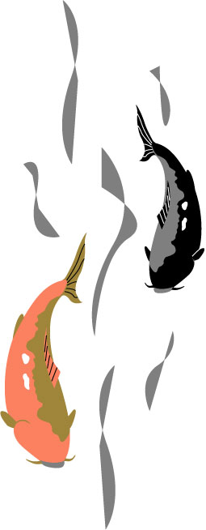

1.大磯ロングビーチ
空と海に包まれる全長１ｋｍの屋外プール、大磯ロングビーチ。ウォータースライダーや波のプール、飛び込み台など個性豊かなプールが8種類!
View More!このサイトでは、大磯町に10年以上住んでいた私がおすすめする大磯町のスポットについて紹介します。
大磯町は神奈川県の中部に位置し、太平洋に面している。美しい海岸線と緑豊かな丘陵が広がり、自然の景観が魅力で多くの観光スポットで四季折々の風景が楽しめる。
大磯町は歴史や文化が魅力的で多くの資料館や邸宅があり、伊藤博文や大隈重信、吉田茂、夏目漱石など、歴史に名を残す著名人が愛し、居住した場所。
空と海に包まれる全長１ｋｍの屋外プール、大磯ロングビーチ。ウォータースライダーや波のプール、飛び込み台など個性豊かなプールが8種類!
View More!
私が大磯町で一番お気に入りの中華料理屋さん。本格的でボリューミーな中華が堪能できメニューは１５０種以上！
View More！旧吉田茂邸跡地日本情緒あふれる和風庭園。展望台からは富士山や伊豆半島、相模湾を一望することができる。ザリガニ釣り、秋には紅葉ライトアップが行われる。
View More！大磯町にある海岸。一面に広がる砂浜と美しい青い海が特徴で、海水浴や海辺ピクニック、磯遊びに最適！7～8月はアオバトが飛来する。
View More！創建2100年ほど前に遡る歴史ある神社。大磯町の開運スポットとして有名で、緑豊かな境内で美しい錦鯉も見れる。
View More！ 